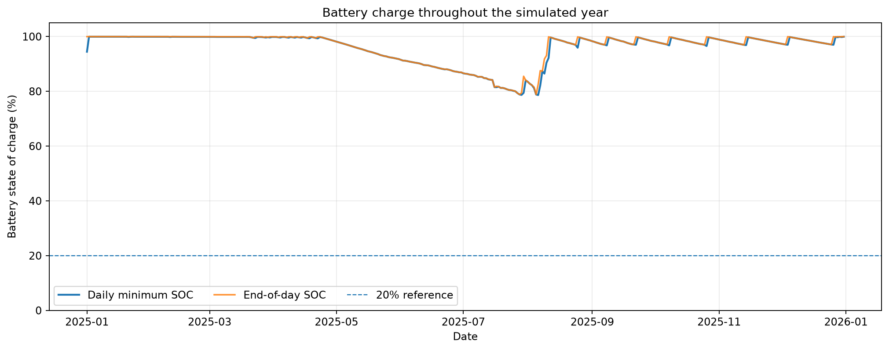
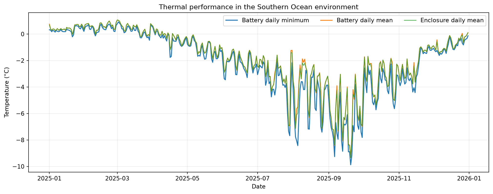
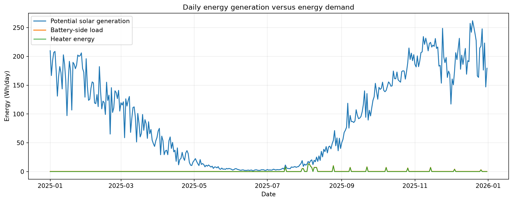
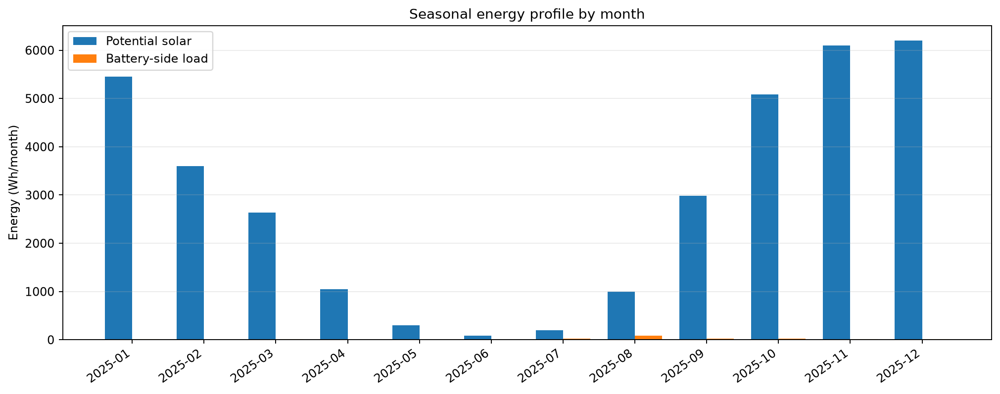
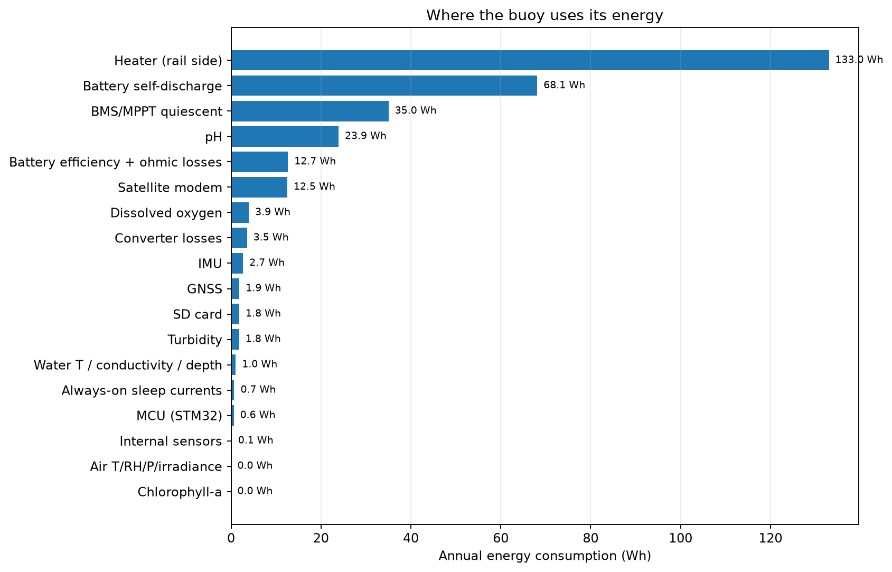
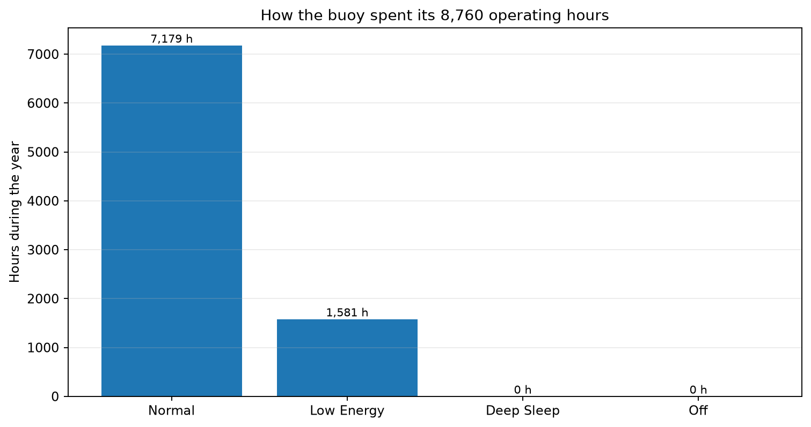
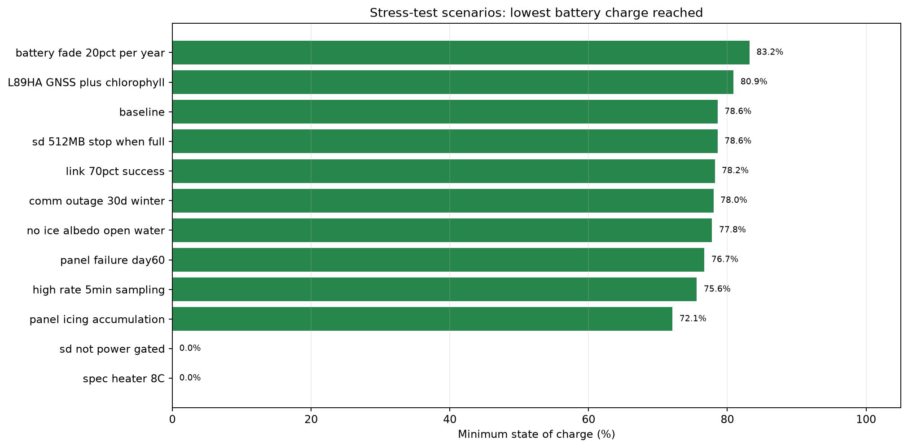
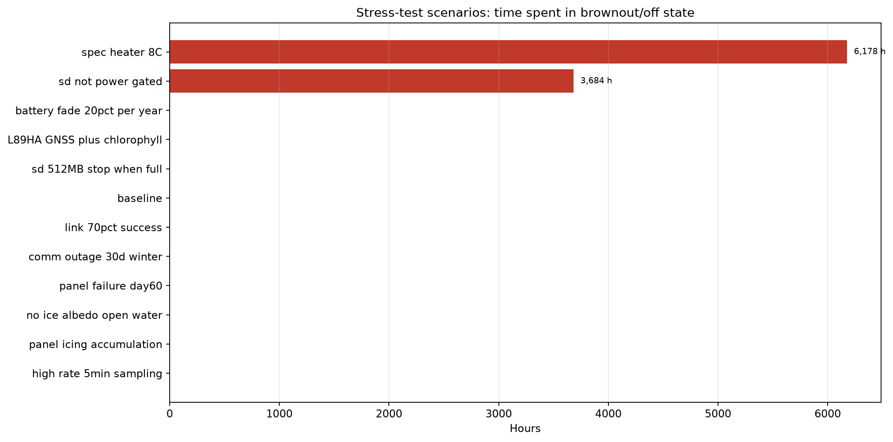
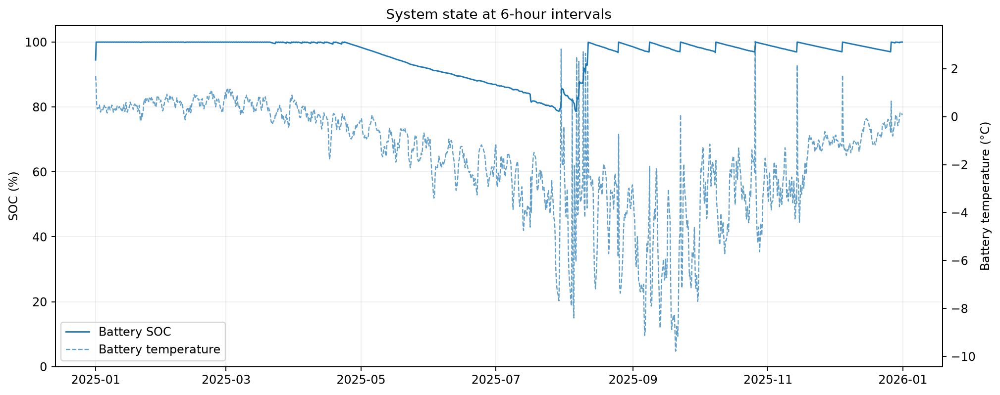

BOYANT | Simulation Results
365-day buoy system simulation · Visual summary generated from BOYANT output logs
Simulation period
365 days
Minimum battery SOC
78.6%
Ending battery SOC
100.0%
Brownout duration
0.0 h
Solar potential
34.7 kWh
Heater energy
133.0 Wh
Minimum battery temperature
-9.9 °C
Packets dropped
0
01 Battery Soc

02 Temperature

03 Daily Energy

04 Monthly Energy

05 Subsystem Energy

06 Operating Modes

07 Scenario Min Soc

08 Scenario Brownout

09 Hourly State

Scenario comparison
| Scenario | Min Soc Pct | End Soc Pct | Hours Off Brownout | Survived Full Period | Packets Dropped |
|---|---|---|---|---|---|
| baseline | 78.6 | 100.0 | 0.0 | True | 0 |
| spec_heater_8C | 0.0 | 93.9 | 6,177.7 | False | 0 |
| sd_not_power_gated | 0.0 | 99.9 | 3,683.7 | False | 0 |
| panel_icing_accumulation | 72.1 | 100.0 | 0.0 | True | 0 |
| high_rate_5min_sampling | 75.6 | 99.9 | 0.0 | True | 0 |
| no_ice_albedo_open_water | 77.8 | 100.0 | 0.0 | True | 0 |
| L89HA_GNSS_plus_chlorophyll | 80.9 | 100.0 | 0.0 | True | 0 |
| comm_outage_30d_winter | 78.0 | 100.0 | 0.0 | True | 0 |
| link_70pct_success | 78.2 | 100.0 | 0.0 | True | 0 |
| battery_fade_20pct_per_year | 83.2 | 100.0 | 0.0 | True | 0 |
| panel_failure_day60 | 76.7 | 100.0 | 0.0 | True | 0 |
| sd_512MB_stop_when_full | 78.6 | 100.0 | 0.0 | True | 0 |
Important: Interpretation: These are outputs of the configured simulation model, not measured buoy performance. Survival and reliability claims depend on the assumptions, component data, weather inputs and validation.